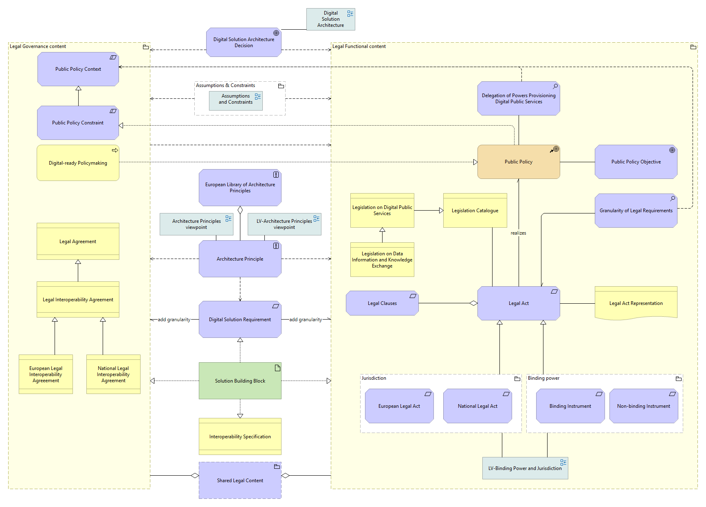
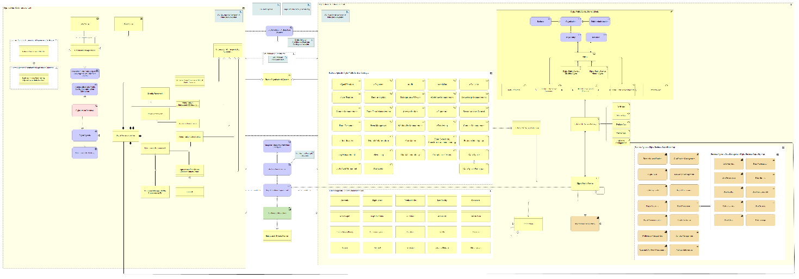
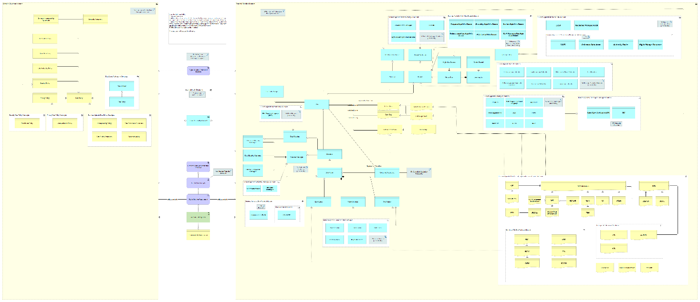
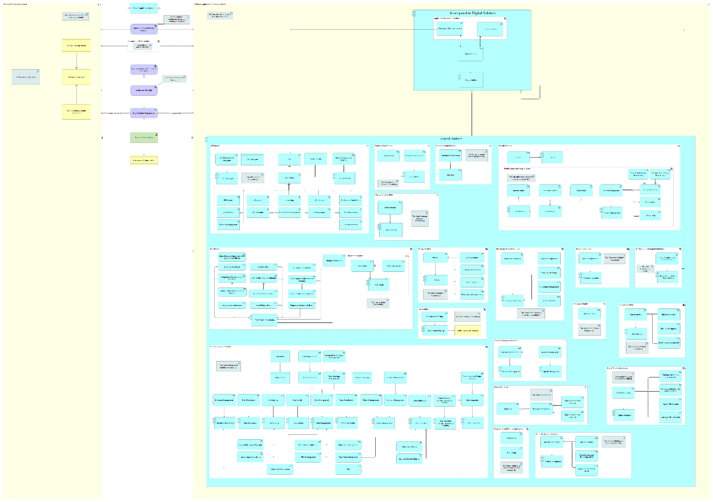
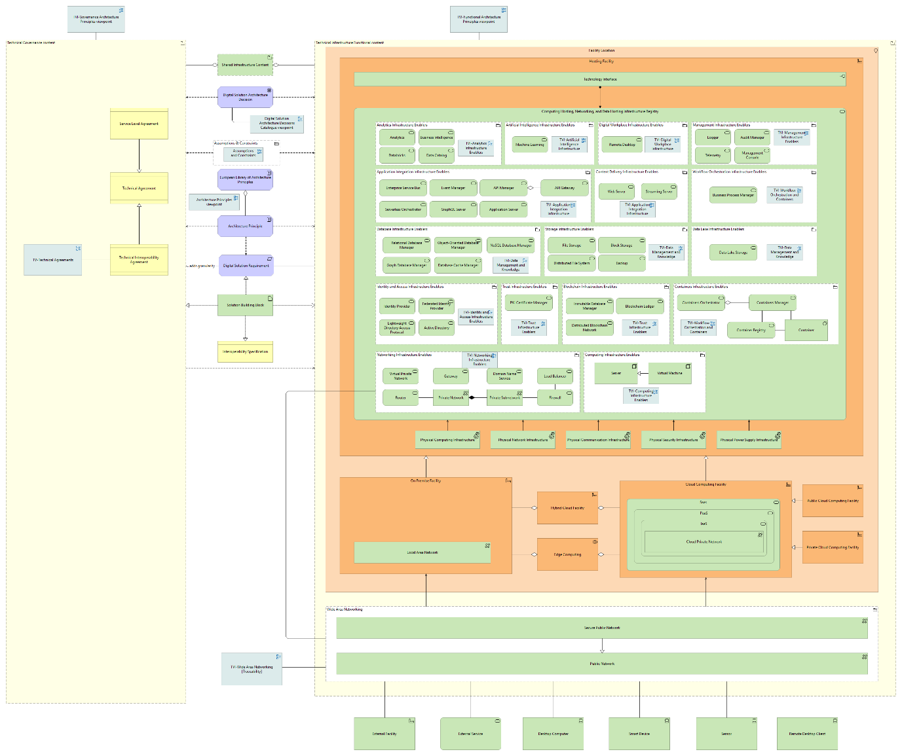

eGovERA Solution Architecture Framework
Architecture Views
The European Interoperability Reference Architecture establishes a structured approach to interoperability by separating concerns into four complementary views. This structure ensures that risks related to compliance, coordination, data consistency, and technology integration are addressed holistically rather than in isolation, reducing the likelihood of fragmented or incompatible digital public services. By organising these concerns into distinct but aligned views—Legal, Organisational, Semantic, and Technical—the framework enables decision-makers to understand how regulatory obligations, operational processes, information exchange, applications, and system infrastructure collectively influence public service delivery outcomes.
The Legal view focuses on the regulatory environment that governs digital services. Its primary implication is risk control: failure to properly account for legislation, compliance obligations, or legal constraints can result in service disruption, penalties, or inability to operate across jurisdictions. By explicitly modelling these elements, the architecture ensures that interoperability initiatives are viable within existing legal frameworks and that enabling instruments are clearly identified.
{kind=link}

Figure 14 Legal View
The Organisational view addresses how services are delivered in practice, defining the processes, roles, and collaboration mechanisms required across entities. Its impact lies in operational alignment; without clearly defined responsibilities and coordinated workflows, even technically sound systems may fail to deliver consistent outcomes. This view ensures that participating organisations can work together effectively, reducing inefficiencies and duplication of effort.
{kind=link}

Figure 15 Organisational View
The Semantic view ensures that information exchanged between systems is consistently understood. The business implication is data reliability: without shared definitions, standardised vocabularies, and agreed data models, information may be misinterpreted, leading to errors in decision-making and service execution. This view mitigates such risks by establishing a common meaning for data across organisational boundaries.
{kind=link}

Figure 16 Semantic View
The Technical view enables the actual exchange of data and communication between systems. It encompasses both application-level functionality and the underlying infrastructure required for connectivity. Its primary impact is service continuity and scalability; it ensures that systems can interact reliably and securely despite differences in technology platforms, deployment models such as on-premises or cloud environments, network configurations, and security frameworks.
{kind=link}

Figure 17 Technical View - Application
{kind=link}

Figure 18 Technical View – Infrastructure
To support consistency across all views, the architecture aligns with ArchiMate®, an internationally recognised modelling standard. This alignment ensures broad acceptance and provides a unified method to represent governance constraints, business operations, data structures, and technology components, thereby strengthening coherence across the entire architecture. Please refer to European Interoperability Reference Architecture Specification for further information.
Design Principles
The overarching objective of the design principles is to ensure that digital public services deliver consistent value across European administrations while remaining adaptable to future policy and technological developments. At the core of this approach is interoperability by design, which directly translates into reduced fragmentation between national systems and more seamless cross-border service delivery. By aligning system design with the European Interoperability Framework guidelines, administrations can minimise integration costs and avoid duplicative investments, thereby improving efficiency and accelerating service rollout. To operationalise this, a reference architecture is established as a reusable blueprint, ensuring that systems are not developed in isolation but instead follow a consistent and proven structure. This approach strengthens quality assurance and reduces implementation risk, as architectural decisions are guided by validated models rather than ad hoc design choices. The adoption of a service-oriented architecture style further reinforces this by structuring systems into modular, reusable services, enabling flexibility and scalability while supporting incremental modernisation. The inclusion of interoperability enablers as mandatory components ensures that interoperability is not treated as an afterthought but embedded into the core of every system. This is complemented by the use of standardised building blocks and specifications, which streamline architecture development processes and improve compatibility across solutions. Alignment with European-level initiatives, including regulatory and data-sharing frameworks, ensures that systems remain compliant and strategically relevant, reducing the risk of future rework.
The eGovernment Reference Architecture introduces additional value by adding more granular architectural specifications, enabling more precise analysis and design of digital public services. Its business-agnostic nature ensures reuse across domains, maximising return on investment and supporting diverse service needs without requiring redesign. Supporting tools such as ontology and implementation roadmaps offer structured guidance to Member States, reducing ambiguity and accelerating adoption. Collectively, these principles enable both modernisation and long-term business continuity, ensuring that digital public services remain resilient.
Constraints
The constraints define the boundaries within which architectural decisions must be made, ensuring consistency, compliance, and alignment with European public sector objectives. Foremost among these is the requirement to adhere to the European Interoperability Framework, which establishes a mandatory baseline for interoperability across legal, organisational, semantic, and technical dimensions. This constraint ensures that all systems contribute to a cohesive ecosystem but also limits deviation, requiring careful alignment in design choices.
Architectural representation is constrained to the use of the ArchiMate modelling notation, which standardises how systems are described and analysed. While this enhances clarity, comparability, and governance, it also requires specialised expertise and may limit flexibility in expressing certain concepts outside the notation’s scope. Additionally, the architecture must extend the European Interoperability Reference Architecture, meaning that all designs are inherently dependent on and must remain compatible with its specifications. This dependency reduces inconsistency but introduces a reliance on upstream updates and governance decisions.
Policy and public administration alignment further constrains the architecture by requiring that all designs directly support European Union policy objectives and administrative processes. This ensures relevance and public value but may restrict purely technical optimisation where it conflicts with policy considerations. The requirement for continuous evolution under European Union programmes introduces an additional governance constraint, as architectures must adapt in line with programme priorities and timelines, potentially impacting stability and long-term planning.
Finally, the obligation to address the LOST views simultaneously increases complexity. Designs must account not only for technical implementation but also for legal compliance, organisational structures, and semantic consistency. While this holistic approach strengthens interoperability and reduces systemic risk, it demands greater coordination and can extend development timelines.
Reference Architectures and Enablers
Interoperability patterns play a central role in this approach. Patterns capture recurring solutions to common challenges without prescribing specific technologies. Instead, they define stable combinations of responsibilities, interactions, and constraints that can be implemented in different ways. For example, the Federated Identity and Access Management enabler addresses authentication and authorisation across organisational boundaries. It relies on identity, trust, and access control capabilities. Similarly, the Cross-Domain Data Exchange enables controlled data sharing between heterogeneous systems, supported by interoperability interfaces, messaging, and governance mechanisms. Data space enablers extend this further by supporting multi-stakeholder data sharing through common governance, semantic and technical alignment.
These enablers can be identified as part of the Technical View – Application in the EIRA / eGovERA reference architecture.
Building Blocks
In this section is provided an overview of the Architecture and Solution building blocks present in EIRA and eGovERA. A comprehensive list can be found on the “Reference Architecture documentation and publication” published separately.
Architecture Building Blocks (ABBs)
Architecture Building Blocks (ABBs) define the essential requirements to design consistent and interoperable digital public services, enabling organisations to align solutions with strategic and regulatory expectations from the outset. By establishing a common understanding of what must be achieved, they reduce ambiguity in system design and support more predictable outcomes across initiatives. An ABB represents an abstract component that captures architecture requirements and guides solution development. Rather than prescribing specific implementations, it defines reusable capabilities spanning legal, organisational, semantic, and technical views. This abstraction allows decision-makers to focus on what a system must accomplish without being constrained by how it is implemented, thereby supporting flexibility and long-term adaptability. These building blocks also function as normative requirement statements of intermediate granularity. They are aligned with the European Interoperability Framework principles and expressed as functional expectations tied to attributes of European public services. This ensures that solutions developed using these definitions inherently reflect agreed standards and policy objectives, reducing the risk of misalignment with regulatory frameworks. Importantly, Architecture Building Blocks describe generic characteristics and functionalities rather than concrete solutions. They are used to model reference architectures and solution templates, providing a structured foundation for consistent system analysis. This approach enables reuse and comparability across projects, while mitigating the risk of fragmentation or duplication of effort in large-scale public sector environments.
ABBs in EIRA and eGovERA
Within EIRA and eGovERA, Architecture Building Blocks (ABBs) serve as the core elements of the architecture model used to represent requirements. These ABBs are identified across all LOST views (Legal, Organisational, Semantic, Technical) and are modelled using the appropriate ArchiMate elements, depending on the nature of the requirement and the corresponding interoperability view.
ABBs represent and model the requirements captured during the analysis phase, typically originating from a request for architecture development (e.g. within an intervention). In this context, eGovERA provides a structured and formal mechanism to document requirements, ensuring that they are consistently modelled, reusable, and machine-readable.
Beyond their identification, ABBs must be properly integrated within the architecture model through the definition of relationships with other elements. In particular:
Relationships between ABBs, such as specialisation, composition, usage, or realisation, are used to structure requirements at different levels of abstraction and to capture dependencies within and across LOST views.
Relationships between ABBs and SBBs (established during the design phase), such as realisation or usage, ensure that each requirement is explicitly related to one or more solution elements.
These relationships are expressed using ArchiMate notation and may be defined:
Within the same view and viewpoints
Across LOST views
The explicit modelling of these relationships is essential to ensure end-to-end traceability, linking requirements across different levels of abstraction and enabling a clear connection between ABBs and their corresponding SBBs in the solution architecture.
For further details on ABB specifications and modelling conventions, please refer to the EIRA Reference Architecture documentation and publication.
Solution Building Blocks (SBBs)
Solution Building Blocks translate architectural intent into operational reality, enabling organisations to deliver tangible digital services that meet defined requirements (as ABBs). Their primary value lies in bridging the gap between abstract design and concrete implementation, ensuring that strategic objectives are effectively realised. A Solution Building Block is a concrete implementation or specification that realises an Architecture Building Block, specialising the abstract capabilities previously defined. This relationship ensures that implementation decisions remain aligned with architectural requirements, reducing the risk of divergence between design and execution. Solutions are composed of one or more Solution Building Blocks assembled to meet specific stakeholder needs. This modular composition supports flexibility, allowing organisations to adapt or extend solutions without redesigning entire systems. It also facilitates reuse, which can lead to cost efficiencies and faster delivery timelines. At the implementation level, Solution Building Blocks represent tangible components such as specifications, applications, services, or infrastructure elements. By embodying the functionality described at the architectural level, they provide the operational mechanisms required to deliver digital public services. However, their effectiveness depends on maintaining alignment with the underlying architectural definitions, as deviations can introduce interoperability risks or reduce system coherence.
SBBs in EIRA and eGovERA
Within EIRA and eGovERA, Solution Building Blocks (SBBs) represent the core elements of the architecture model used to define the solution. SBBs correspond to the concrete realisation of requirements and are identified across all LOST views (Legal, Organisational, Semantic, Technical). They are modelled using the appropriate ArchiMate elements, depending on the type of solution component and the corresponding interoperability layer.
SBBs are defined during the design phase, where the requirements captured as ABBs in the analysis phase are translated into implementable solution components. These may include applications, services, data specifications, infrastructure components, or agreements. In this context, eGovERA provides a structured and formal mechanism to document solution architectures, ensuring consistency, reuse, and machine-readable representation.
Similarly to ABBs, SBBs must be properly integrated within the architecture model through the definition of relationships with other elements. In particular:
Relationships between SBBs, such as composition, aggregation, serving, etc., are used to describe how solution components interact and are structured within and across LOST views.
Relationships between SBBs and ABBs, such as realisation or usage, ensure that each solution element is explicitly linked to the requirements it realises, maintaining consistency between analysis and design.
These relationships are expressed using ArchiMate notation and may be defined:
Within the same view and viewpoints
Across LOST views
The explicit modelling of these relationships is essential to ensure end-to-end traceability, linking solution components to their corresponding requirements and enabling a coherent and verifiable solution architecture.
For further details on SBB specifications and modelling conventions, please refer to the EIRA Reference Architecture documentation and publication.
Governance and Review Process
Conformance and Compliance
Governance within EIRA and eGovERA is structured around validation, conformance, and compliance. Validation assesses whether the architecture meets functional, non-functional, and interoperability requirements. It focuses on fitness for purpose and alignment with policy objectives. Conformance evaluates whether the architecture correctly applies EIRA and eGovERA principles, building blocks, and modelling rules. It ensures that interoperability is embedded by design and that traceability between requirements and solutions is maintained. This process may involve automated checks and expert review. Compliance addresses adherence to legal and regulatory requirements. It ensures that solutions can be deployed within the European legal framework, including data protection, sector-specific legislation, and broader policy obligations. Failure to meet compliance requirements presents significant legal and operational risks.
Conformance Levels
Conformance is structured across three levels: mandatory, recommended, and optional. Mandatory elements establish baseline requirements, including the use of LOST views, ArchiMate modelling, and ELAP principles. These are essential for any solution claiming alignment. Recommended elements enhance quality and interoperability, such as the use of reusable EU assets and advanced modelling practices. While not required, their adoption improves sustainability. Optional elements provide flexibility for domain-specific or performance-related enhancements without compromising core principles. This tiered approach allows proportional application across different contexts.
Maintenance and Evolution
The reference architecture follows a structured lifecycle to remain relevant and responsive to user needs. Changes are categorised as major, minor, or patch releases, depending on their impact. Major changes introduce structural modifications and require careful transition planning, while minor and patch updates maintain continuity. In order to support sustainability, the evolution and maintenance process is organised in 2-year cycles. It means that major releases just happen every two years and aligning with community needs. This approach ensures that the architecture can evolve without disrupting its core structure. Ongoing community input plays a key role in maintaining relevance and practicality.